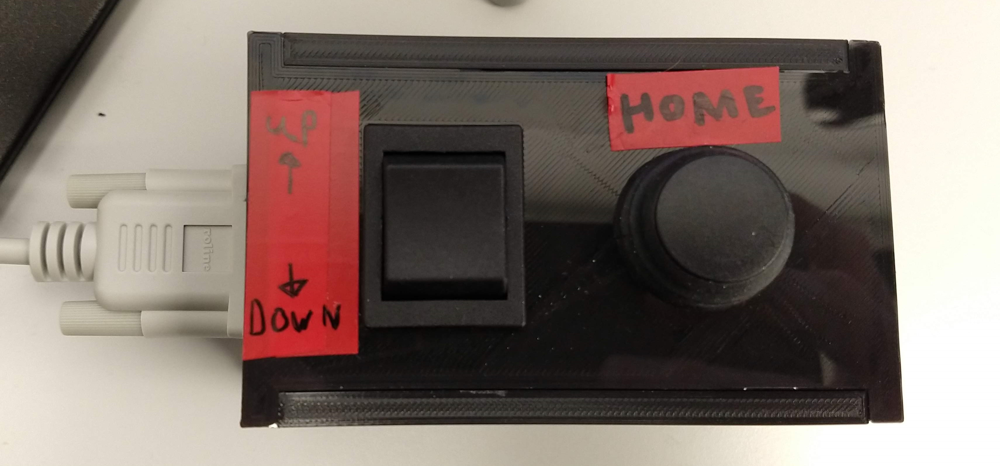

Description
To add in-sample offset shift to reflection autofocus systems (either home built or commercial systems such as the ASI CRISP) We developed an Arduino based controller for shifting the focus lock position of reflection based autofocus systems.

We use a reflection based ASI CRISP to maintain focus on our microscope. Similar to many other systems, it reflects an IR beam off a coverslip, and uses shifts in the position of this beam to maintain constant objective-slide separation by closed loop control. The limitation of this approach is that this approach only allows you to lock focus at/ very near to the coverslip, in a range < 1 um for a 100x high NA objective, or optionally, to offset the lock position a fixed amount by physically displacing the autofocus device. We wanted to image cells at different heights within the same sample, so this approach was not sufficient for us.
As the Focus Shifter module on LifeHack has its own beam path and tube lens we were able to produce large changes in the lock position by implementing a motorized Arduino controlled tube lens on this path. This effectively offsets the lock position (the coverslide) and the camera/ excitation focus by a variable amount, in our case allowing ~ 10 um of lock range on 100x NA 1.49 TIRF objective, instead of the standard < 1 um with a fixed autofocus tube lens.
Although this implementation is built around an ASI CRISP, in principle it should work for any commercial or home built autofocus system.

Construction
👁 View CAD Design Online 👁
Electronics:
- ASI crisp or other reflection based autofocus system
- Arduino Uno
- Adafruit motor shield v2.3
- 12V stepping motor, Unipolar Hybrid Stepper Motor 1.8°, 0.10Nm, 12 V dc, 400 mA, 6 Wires RS Stock No. 191-8299
- PCB headers
- 12V power supply: Plugtop PSU UK unregulated 3-12Vdc 6W RS Stock no.: 6158880
- Pulley: MXL Plastic Pulley with insert teeth 18 RS Stock no.: 7784714
- 2x MXL Rubber Timing Belt W1/4, L 12.00 in. RS Stock no.: 7785089
- Wires
- dpdt switch
- Non latching button
- Spade crimp connectors
Optics & Optomechanics
- 1” F=100mm biconvex lens (NIR coated)
- SM1 Zoom Housing for Ø1" Optics, Non-Rotating, 2" (50.8 mm) Travel SM1NR1
- Zoom housing ? cage adaptors:
- 2x LCP02/M
- SM1T10 SM1 (1.035"-40) Coupler, External Threads, 1" Long
- Motor to ½” post adaptor: CP06F/M
- 20 cm of cage rods
- CRISP mounted on cage plate adaptor
- LCP01/M
- SM2A6
- C Mount to SM1 thread adaptor.
Set Up
The Thorlabs zoom lens housing is controlled with a stepper motor, connected via a pulley and timing belt. Bizarrely, I could not find an easy out of the box way of adding pulley teeth to a cylindrical object (the zoom housing). As our application was low torque, I took the very low tech approach of chopping up a second timing belt, and gluing it inside out onto the outside of the zoom housing. The glued timing belt then acts as a makeshift pulley.
Wire the motor to the Adafruit control board in 6-wire configuration. Ensure to connect an external 12V power supply to the Arduino board to supply sufficient power to the motor.
Code is included to control the stepper motor and microscope focus via Arduino. Download the Arduino IDE, and open the Arduino focus-controller.ino sketch. Install the _Adafruit\_Motor\_Shield\_V2\_Library_ via the _Sketch\>Include Library\>Manage Libraries_ interface. Upload the code to the Arduino board.
Connect to the Arduino board and control the motor using the Arduino (or any other) serial monitor interface.
Axial magnification is proportional to the square of the lateral magnification. In order for a tube lens shift of several mm to cause sufficient focal shift, we need to use a shorter focal length tube lens for the autofocus, compared to the imaging tube lens. In our case, the (Nikon) imaging tube lens is f=200mm, and the autofocus is f=100mm, reducing the axial autofocus magnification by a factor of 4 – this gives us an ~10 um lock range.
Control Box
In practice the serial monitor control is too clunky for any more than initial tests. For regular use there is a dual throw switch to control the lens position and a home button to return to a set "zero" point. Both are contained in a 3d printed box.
To produce this, simply solder suitable lengths of wire to the arduino ports (up=2, down=3, home=4) at one end and to spade crimp connectors at the other.
Each connection requires a ground but the arduino only provides one. Creating a multi-ended connector as below solves this and contains the solder point within the control box.

The buttons can then be inserted into the control box and connected using the crimp connectors.


Parts
⇩ Download ⇩